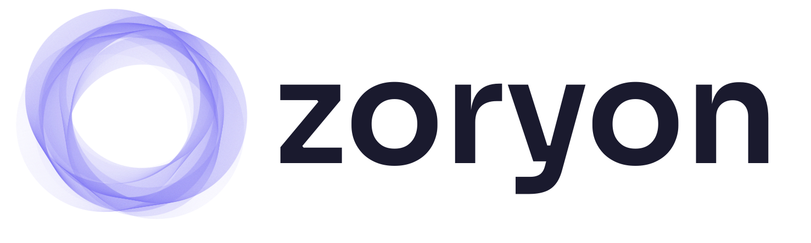

Zoryon
Brand Guidelines
Guia oficial de identidade visual, tom de voz e sistema de design da Zoryon — empresa de IA aplicada a negócios.
Setorização por IA. Diagnóstico. Resultado de negócio.
Paleta de Cores
A paleta da Zoryon equilibra sofisticação técnica com acessibilidade. O roxo transmite inteligência e inovação; os acentos trazem energia e confiança.
Tipografia
Duas fontes, papéis claros. Sora para impacto e identidade. Inter para legibilidade e corpo de texto.
Logo
O logo combina o vortex (símbolo) com a wordmark "zoryon" em Sora Bold. O vortex representa a transformação estrutural — processos convergindo para inteligência.

Principal — fundo escuro (branco)
Variante purple — fundo escuroUso do Logo — Do's & Don'ts
Regras para manter a consistência visual do logo em todos os contextos.
Área de Proteção
O logo deve sempre ter uma área de respiro ao redor equivalente à altura da letra "z" da wordmark. Nenhum elemento gráfico, texto ou borda deve invadir esse espaço.
A unidade "1x" corresponde à altura da letra minúscula "z" na wordmark. Esse é o espaço mínimo obrigatório em todas as direções.
Tom de Voz
A Zoryon fala a linguagem de resultado de negócio, não de tecnologia. Começa pelo problema do cliente, nunca pela ferramenta. O tom é direto sem ser frio, acessível sem ser superficial.
Direto
Vai ao ponto. Sem rodeios, sem jargão desnecessário. Cada frase tem um propósito claro.
Acessível
Empresário de R$200K/mês entende na primeira leitura. Sem termos técnicos que afastem o público.
Firme
Tem convicção sobre o que funciona. Não pede desculpas por ter opinião. Posiciona sem arrogância.
Humano
Quem fala é o Jonas — com bagagem real de 10+ anos em operações. Não é uma marca corporativa genérica.
Princípios de Comunicação
Problema primeiro, solução depois
"Seu time gasta 15h/semana em tarefas manuais" → depois explica como a IA resolve. Nunca começa com a tecnologia.
Resultado auditável
Tudo que a Zoryon promete pode ser medido. Sem "resultados incríveis" — com números, antes/depois, ROI concreto.
Operador, não influencer
Jonas fala de dentro da operação. A credibilidade vem de ter feito, não de teoria. Experiência > hype.
IA como meio, não fim
A Zoryon não vende IA. Vende operação inteligente, crescimento saudável, time potencializado. IA é o como, não o quê.
Vocabulário da Marca
Palavras que definem a Zoryon — e palavras que a marca nunca usa.
● Use
- Setorização por IA
- Inteligência operacional
- Diagnóstico
- Resultado de negócio
- Resultado auditável
- Crescimento saudável
- Acompanhamento contínuo
- Potencializar
- IA aplicada
- Operação inteligente
- Departamento por IA
- Transformação estrutural
● Evite
- Milagre
- Mágica
- Instantâneo
- Disruptivo
- Revolucionário
- ML / NLP / LLM
- Linguagem de coach
- Fácil / rápido / automático
- Chatbot
- Solução inovadora
- Transformação digital
- Game changer
Design Tokens
Tokens prontos para uso em CSS e Tailwind. Copie e use diretamente no código.
Cores
| Token | CSS Variable | Tailwind | Hex | |
|---|---|---|---|---|
| Primary | --color-primary |
zoryon-purple |
#837BF4 |
|
| Primary Light | --color-primary-light |
zoryon-purple-light |
#A9A3F7 |
|
| Primary Dark | --color-primary-dark |
zoryon-purple-dark |
#6A62D4 |
|
| Background | --color-background |
zoryon-bg |
#F2F2FA |
|
| Accent Warm | --color-accent-orange |
zoryon-tangerine |
#FF7D3B |
|
| Accent Cool | --color-accent-green |
zoryon-emerald |
#2BD0A8 |
|
| Text Primary | --color-text |
zoryon-ink |
#212130 |
|
| Text Secondary | --color-text-muted |
zoryon-slate |
#6E7191 |
Tipografia
| Role | Font | Weight | Size | Tracking |
|---|---|---|---|---|
| Display / Logo | Sora |
800 |
48px |
-1.5px |
| H1 | Sora |
700 |
48px |
-1.5px |
| H2 | Sora |
700 |
32px |
-0.8px |
| H3 | Sora |
600 |
20px |
-0.3px |
| Body | Inter |
400 |
16px |
0 |
| Body Small | Inter |
400 |
14px |
0 |
| Label | Sora |
600 |
11px |
2px |
| Button | Sora |
600 |
14px |
-0.2px |
Espaçamento
| Token | Value | Use |
|---|---|---|
--space-xs |
4px | Inline gaps, ícone-texto |
--space-sm |
8px | Tags, badges, inputs internos |
--space-md |
16px | Cards internos, grid gaps |
--space-lg |
24px | Seções internas, card padding |
--space-xl |
40px | Entre blocos, section spacing |
--space-2xl |
64px | Section padding, hero spacing |
--space-3xl |
80px | Page sections, major blocks |
--radius-sm |
6px | Badges, tags, small elements |
--radius-md |
10px | Buttons, inputs |
--radius-lg |
16px | Cards, modals, sections |
Acessibilidade
Combinações aprovadas de cor para garantir contraste WCAG AA (mínimo 4.5:1 para texto normal).